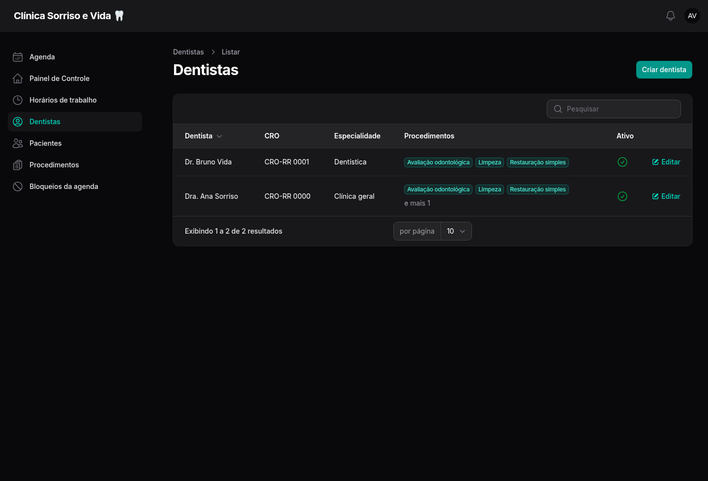
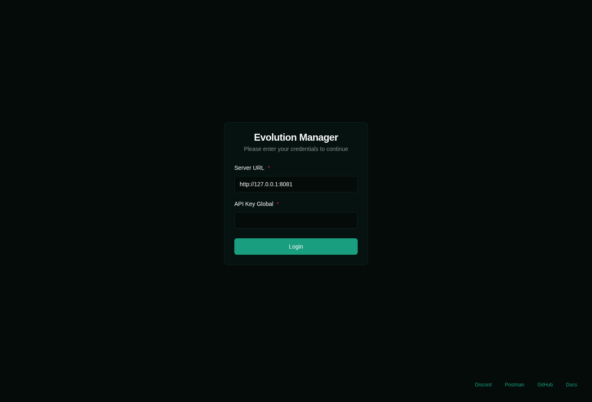
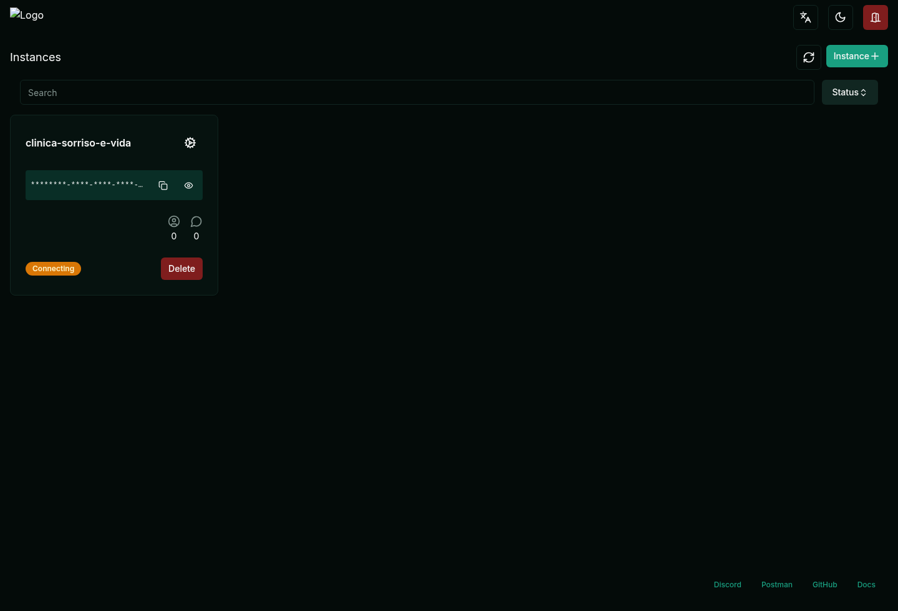
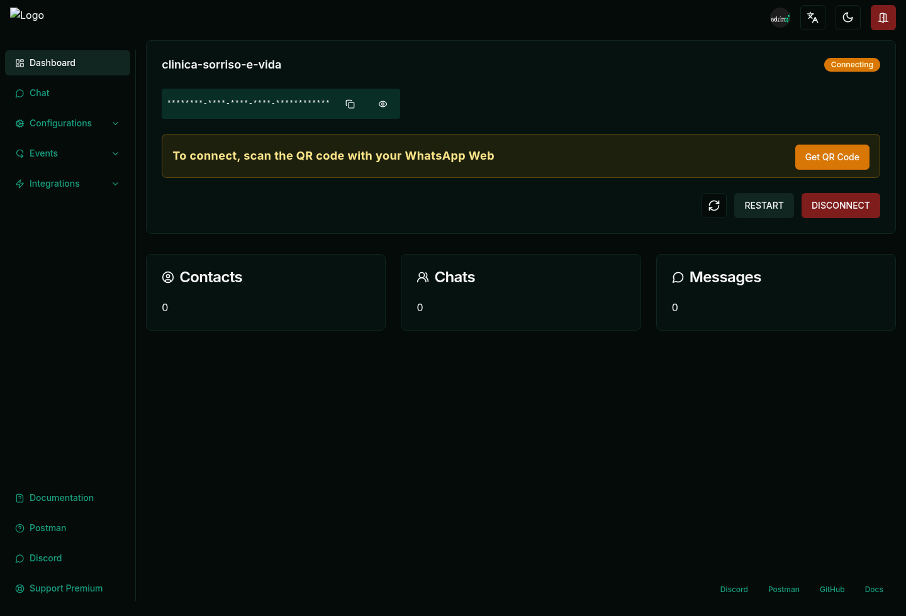
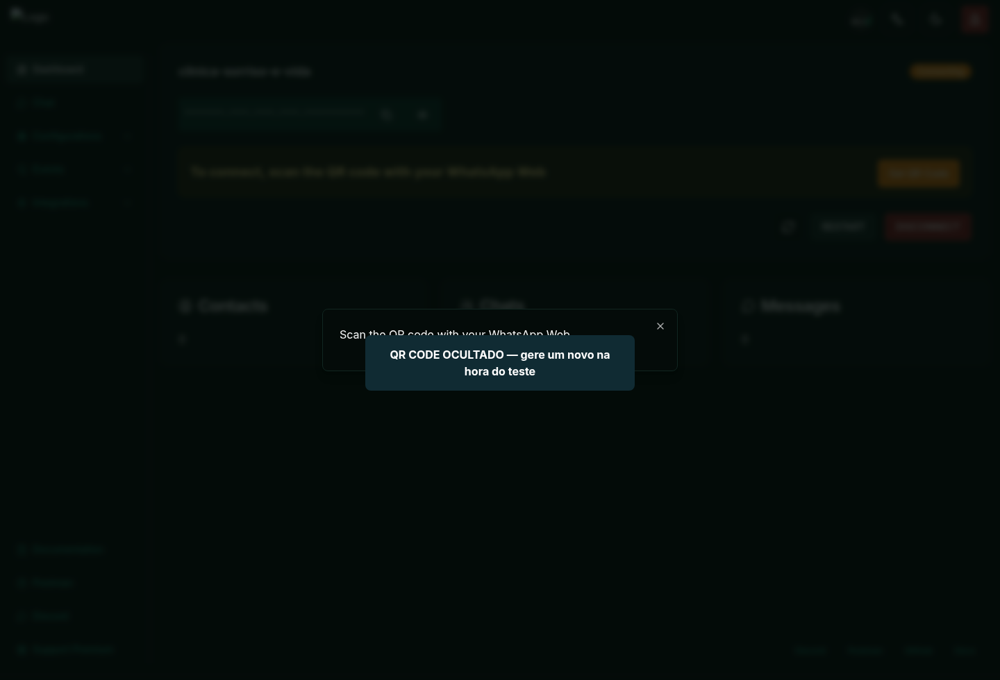
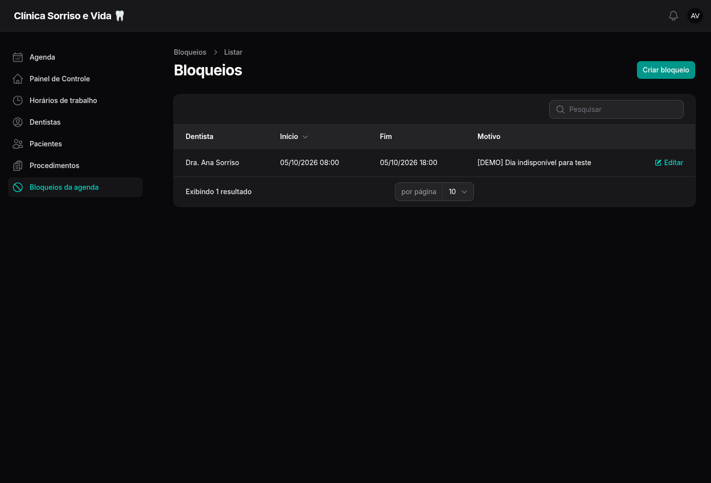

Prepare os dados, conecte o Evolution, teste o bot com dois celulares e confira tudo no painel administrativo.
O objetivo é testar o caminho inteiro: WhatsApp → Evolution → bot → agenda → painel administrativo.
Entra no servidor, prepara os exemplos, abre o Evolution e acompanha o painel.
Usa um segundo celular para conversar com o bot, escolher data e concluir agendamentos.
Ter acesso SSH ao servidor e estar dentro da pasta do projeto.
Ter o endereço do painel administrativo e a conta de acesso.
Separar três números: o número da clínica conectado ao Evolution e os dois celulares que enviarão mensagens.
Adicionar os dois celulares à lista EVOLUTION_ALLOWED_NUMBERS da homologação.
Usar uma data futura. O comando informará qual segunda-feira ficará bloqueada.
Primeiro publique esta versão do projeto. Depois execute um dos comandos abaixo na pasta do sistema.
Especialidade: Clínica geral
Atende: avaliação, limpeza, restauração simples e avaliação de clareamento.
Exceção: fica indisponível na data indicada pelo comando.
Especialidade: Dentística
Atende: avaliação, limpeza e restauração simples.
Exceção: continua disponível na mesma data bloqueada para Ana.

Painel › Dentistas após executar o comando| Procedimento | Duração | Valor de demonstração |
|---|---|---|
| Avaliação odontológica | 30 minutos | R$ 120,00 |
| Limpeza | 45 minutos | R$ 180,00 |
| Restauração simples | 60 minutos | R$ 250,00 |
| Clareamento — avaliação | 30 minutos | Sob consulta |
A lista de permissão impede que outras pessoas conversem com o bot enquanto vocês testam.
| Serviço | Estado esperado | Função |
|---|---|---|
| app / nginx | Up | Painel e webhook. |
| queue | Up | Processa a conversa e envia respostas. |
| scheduler | Up | Dispara lembretes. |
| evolution | Up | Conecta o WhatsApp. |
| postgres / redis | Up / healthy | Dados, sessão e fila. |

Evolution Manager 2.3.7 — tela de entrada| Campo | O que colocar |
|---|---|
| Server URL | O endereço-base do Evolution, sem /manager. Ex.: http://IP:8081 ou o domínio HTTPS configurado. |
| API Key Global | O valor de EVOLUTION_API_KEY no arquivo .env. Não envie essa chave por WhatsApp e não a mostre em capturas. |

Lista de instâncias do Evolution| Status | Significado |
|---|---|
| Connecting | A instância existe, mas ainda espera a leitura do QR Code. |
| Open / Connected | O telefone está conectado e pronto para trocar mensagens. |
| Close / Disconnected | A sessão caiu ou foi desconectada; gere novo QR se necessário. |

Abra a instância e clique em “Get QR Code”Clique em Get QR Code.
WhatsApp › Configurações/Menu › Aparelhos conectados.
Toque em Conectar um aparelho e leia o código exibido no computador.
Feche a janela somente quando o status mudar para conectado.

Exemplo — gere um código novo na horaMostra consultas do dia, confirmadas, concluídas, canceladas e faltas.
Lista consultas, pesquisa paciente e permite confirmar, iniciar, concluir ou cancelar.
Dentistas, pacientes, procedimentos, horários e bloqueios.

Bloqueios da agenda — a data criada pelo comando| Menu | O que conferir |
|---|---|
| Agenda | Se os dois agendamentos chegaram, origem WhatsApp, data, paciente e profissional. |
| Dentistas | Se Ana e Bruno estão ativos e ligados aos procedimentos. |
| Horários de trabalho | Segunda a sexta, manhã e tarde, para os dois. |
| Bloqueios da agenda | A próxima segunda-feira indisponível para Dra. Ana. |
Use o Dr. Bruno na data bloqueada para a Dra. Ana. Isso prova que o bloqueio é individual.
No celular A, envie menu ao número conectado no Evolution.
Responda 1. Informe o nome completo se o bot pedir.
Use Avaliação odontológica, Limpeza ou Restauração simples.
Responda com o número exibido ao lado do nome — a ordem pode variar.
Use a data que apareceu no terminal ao executar o comando.
Responda com o número do horário e depois sim.
Paciente criado com o mesmo número do celular A.
Procedimento, Dr. Bruno, data e horário corretos.
Status inicial Agendada e origem WhatsApp.
Enviar confirmar no celular A muda o status para Confirmada.
Agora escolha a Dra. Ana na mesma data. O bot deve impedir aquele dia e aceitar outra data livre.
Esperado: “Não há horários livres nessa data”.
Esperado: consulta criada para Ana na nova data.
| Ação | Mensagem | O que conferir |
|---|---|---|
| Listar | status | Cada celular vê somente as próprias consultas. |
| Reagendar | menu → 4 | Nova data/horário aparecem no painel. |
| Cancelar | menu → 3 | Status vira Cancelada e permanece no histórico. |
| Interromper | sair | Fluxo atual termina; “menu” começa novamente. |
| Sintoma | Conferência | Comando útil |
|---|---|---|
| Nenhuma resposta | Evolution conectado, celular autorizado e worker da fila ativo. | docker compose ps |
| Mensagem chega, mas trava | Logs do queue e do app. | docker compose logs --tail=100 queue app |
| Evolution desconectado | Abra a instância e gere novo QR Code. | — |
| Procedimento não aparece | Ativo e vinculado ao dentista no painel. | — |
| Data sem horário para ambos | Expediente, antecedência mínima, duração e consultas existentes. | — |
| Só um celular funciona | Formato dos dois números em EVOLUTION_ALLOWED_NUMBERS. | — |
A saída esperada contém estado aberto/conectado. O comando não envia mensagem.
Comando de demonstração executado sem erro.
Dois dentistas, quatro procedimentos e bloqueio visíveis no painel.
Evolution mostra a instância correta como conectada.
Os dois celulares recebem resposta ao enviar “menu”.
Dr. Bruno aceita horário na data bloqueada para Ana.
Dra. Ana rejeita a data bloqueada e aceita outra data.
As duas consultas aparecem no painel com origem WhatsApp.
Confirmação, reagendamento e cancelamento funcionam.
docker compose exec -T app php artisan demo:prepare-partner-test
menu
Guardem as capturas dos dois celulares e da Agenda. Elas serão a evidência da homologação.
Referência técnica: Evolution API/Manager v2.3.7 • Este guia não contém chaves nem senhas.